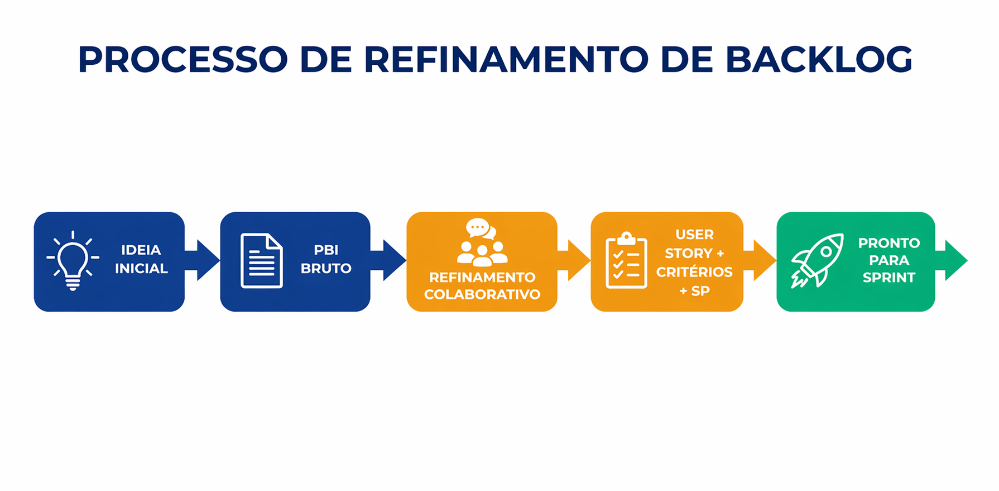

Refinamento de Backlog: Contexto e Processo
Entenda o que é refinamento de backlog, suas características e como aplicar no projeto
Definição e Características
Refinamento de Backlog (Backlog Refinement/Grooming): Atividade
contínua para esclarecer, dividir, priorizar e preparar PBIs (Product Backlog Item) até ficarem prontos para a
Sprint. Não é um evento prescrito - ocorre conforme necessidade durante a Sprint.
Participantes: Product Owner, Desenvolvedores e stakeholders
Frequência: Sessões curtas e frequentes
Foco: Entendimento compartilhado e valor
Meta: Itens prontos para Sprint
Saídas Típicas:
User Stories claras
Critérios de aceite
Estimativas (SP)
Dependências identificadas
Prioridade ajustada
Processo de Refinamento
1
Ideia Inicial
PBI bruto
2
Refinamento
Discussão colaborativa
3
User Story
Formato + Critérios
4
Estimativa
Story Points
5
Pronto
Para Sprint
